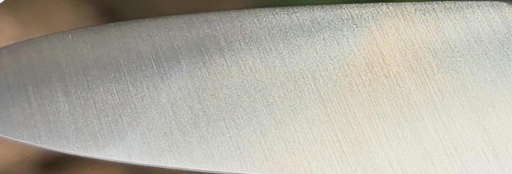
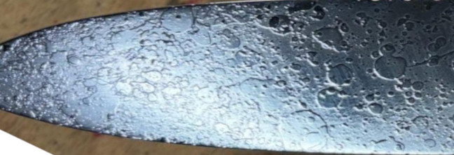
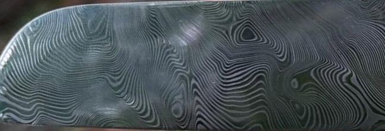
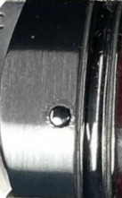
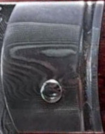
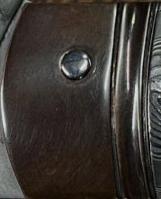

Acier de la lame
Le choix de l'acier est la décision fondatrice de chaque couteau. Il définit le caractère de la lame — sa dureté, sa tenue de tranchant, sa résistance à la corrosion et son âme visuelle. Chaque acier a sa propre personnalité.
Finition de la lame
La finition de la lame transforme un outil en objet de contemplation. Elle révèle le caractère de l'acier choisi et imprime la signature visuelle du couteau. Trois univers esthétiques, trois atmosphères distinctes.



Mitre avant
La mitre avant, pièce de jonction entre la lame et le manche, assure l'équilibre du couteau tout en affirmant son identité esthétique. Elle est le cadre de la lame.



Mitre arrière
La mitre arrière clôture le manche avec élégance. Elle peut dialoguer avec la mitre avant ou créer un jeu de contraste assumé. La ponctuation finale du couteau.
Matière du manche
Le manche est l'interface entre la main et la lame. C'est lui qui vous habite au quotidien, lui que vous touchez avant de voir la lame. Son choix est presque personnel, presque intime.
Ressort du dos
Le ressort courant le long du dos du manche est une surface discrète mais visible à chaque utilisation. Sur les couteaux pliant ou à dos, il peut recevoir un travail décoratif. Un détail que l'on découvre au fil du temps.
Guilloché de la lame
Sur la planche de la lame — la zone plate non tranchante entre le dos et la griffe — un travail décoratif peut être réalisé. Une signature supplémentaire du couteau.
Faux tranchant
Le faux tranchant est un biseau taillé sur le dos de la lame, lui conférant une finesse visuelle et aérodynamique supplémentaire. Il transforme le profil de la lame et affine sa silhouette.